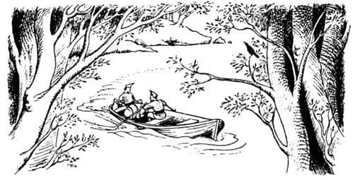
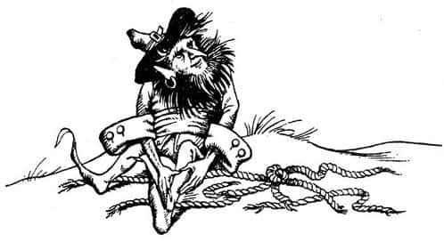
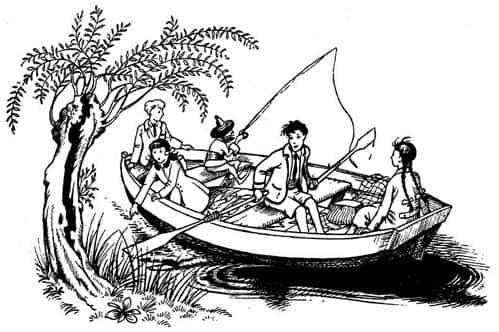

Cüce
Açık havada yatmanın en kötü yanı çok erken uyanmanızdır. Uyandığınız anda kalkmak zorunda kalırsınız, çünkü yer öyle serttir ki rahat edemezsiniz. Ayrıca kahvaltıda elma varsa ve bir gece önce akşam yemeğinde de elma yemişseniz, bu durumunuzu daha da kötüleştirir. Lucy mükemmel bir sabah olduğunu söylediğinde – ki bu doğruydu da – söylenecek başka güzel söz kalmamış gibi görünüyordu. Edmund, “Gerçeği söylemek gerekirse, bu adayı terk etmeliyiz” diyerek herkesin duygularını dile getirdi.
Kuyudan su içip, yüzlerini yıkadıktan sonra tekrar dereden aşağıya, sahile gittiler ve bulundukları yeri anakaradan ayıran boğaza baktılar.
“Yüzmek zorundayız” dedi Edmund.
“Bu, Susan için uygun olabilir” dedi Peter (Susan okulda yüzme ödülleri kazanmıştı). “Ancak geri kalanlar için aynı şeyi söyleyemem.” “Geri kalanlar”lardan kastı, okulun yüzme havuzunda iki tur bile atamayan Edmund ve pek iyi yüzemeyen Lucy’ydi.
“Zaten” dedi Susan, “boğazda akıntı olabilir. Babam, bilmediğin yerde yüzmenin delilik olduğunu söylerdi.”
“Fakat Peter” dedi Lucy, “beni dinleyin. Evdeyken, yani İngiltere’deyken pek iyi yüzemediğimi biliyorum. Ancak uzun süre önce – eğer bu doğru bir tanımsa – biz Narnia’da kral ve kraliçe olduğumuz günlerde yüzmüyor muyduk? O zamanlar ata da biniyorduk, bir sürü şey yapıyorduk. Sence—”
“Ama o zamanlar bir tür yetişkindik” dedi Peter. “Uzun yıllar hüküm sürdük ve bazı tecrübeler kazandık. Şu anda büyülü yolculuğu yaptığımız yaşta değil miyiz?”
“Ah!” dedi Edmund. Herkesin susmasına ve onu dinlemesine neden olan bir sesle, “Her şeyi anladım az önce” diye ekledi.
“Neyi anladın?” diye sordu Peter.
“Gerçekten her şeyi” dedi Edmund. “Dün gece kafamızı karıştıran şeyi biliyorsunuz. Yani biz Narnia’yı bir yıl önce terk etmiştik. Ama her şey Cair Paravel’in yüzyıllar önce terk edildiğini kanıtlar gibi görünüyor. Hadi, anlamıyor musunuz? Narnia’da ne kadar uzun süre yaşarsak yaşayalım, dolaptan geçerek geri döndüğümüzde, zamanın değişmediğini hissetmiyor muyduk?”
“Devam et” dedi Susan. “Sanırım anlamaya başlıyorum.”
“Bu da demek oluyor ki” diye devam etti Edmund, “Narnia’yı terk ettiğiniz anda, Narnia’da zamanın nasıl geçtiği hakkında fikir yürütemiyorsunuz. İngiltere’de bizim için sadece bir yıl geçtiğinde, Narnia’da neden yüzyıllar geçmiş olmasın?”
“Haklısın Ed” dedi Peter. “Sana katılıyorum. Buna göre biz Cair Paravel’de gerçekten yüzyıllar önce yaşadık. Yani Haçlıların Anglo-Saksonların ya da Eski Britanyalıların modern İngiltere’ye dönmesi gibi bir şey bizim Narnia’ya dönmemiz!”
Lucy, “Bizi görünce ne kadar heyecanlanacaklar—” diye söze girmişti ki, “Susun! Bakın!” dedi diğerleri. Çünkü şimdi bir şeyler oluyordu.
Anakaranın üzerinde, çocukların biraz sağ tarafında ormanlık bir burun vardı. Herkes dere ağzının bu burnun hemen arkasında olduğundan emindi. Ve şimdi, bu burnun arkasından bir kayık peydahlanmıştı. Kayık burnu geçtikten sonra döndü ve boğaz boyunca ilerleyerek onlara doğru gelmeye başladı. Kayıkta iki kişi vardı; biri kürek çekiyor, diğeri arkada oturmuş, canlıymış gibi kıpır kıpır oynayan bir bohça tutuyordu. Görünüşe bakılırsa iki adam da askerdi. Başlarında çelik miğferler vardı ve hafif, zincir örgülü zırh giymişlerdi. Sert yüzlü ve sakallıydılar. Çocuklar kumsaldan ormanın içlerine doğru girdiler ve hiç kıpırdamadan olan biteni seyrettiler.
Kayık hemen hemen karşılarına geldiğinde, “Burası iyi” dedi arkadaki asker.
“Ayaklarına taş bağlamayacak mıyız, Onbaşım?” dedi diğeri, küreklere yaslanarak.

“Aman!” diye hırladı diğeri. “Gerek yok. Ayrıca taş da yok. Sıkıca bağlarsak taşsız da boğulur” diyerek ayağa kalktı ve bohçayı kaldırdı. Peter şimdi bunun bir canlı olduğunu görebiliyordu. Gerçekten de bohçada çırpınan, elleri ve ayakları bağlı bir cüce vardı. Az sonra kulağının dibinde bir vınlama duydu. Peter’in duyduğu sesin ardından, asker birdenbire kollarını kaldırdı; cüceyi teknenin dibine düşürmüş, kendisi de suya düşmüştü. Bata çıka karşı kıyıya yüzdü. Peter, Susan’ın okunun askeri miğferinden vurduğunu anlamıştı. Döndüğünde Susan’ın betinin benzinin attığını gördü, ama şimdiden ikinci oku kirişe yerleştirmişti. Ancak ikinci oku kullanmasına gerek kalmadı. Diğer asker, arkadaşının düştüğünü görür görmez tiz bir çığlık atarak kayığın öbür tarafından suya atlamış, yalpalaya yalpalaya suda yürüyerek (su fazla derin değildi) anakaradaki ormanda kaybolmuştu.
“Çabuk! Akıntı kayığı sürüklemeden yetişelim!” diye bağırdı Peter. Susan ve Peter, elbiseleriyle suya atladılar. Su daha omuzlarına gelmeden elleri kayığı yan taraftan kavramıştı. Birkaç saniyede kayığı kıyıya çektiler, cüceyi dışarı taşıdılar. Edmund cep çakısıyla cücenin bağlarını kesmeye başladı. (Peter’in kılıcı daha keskindi fakat bir kılıç bu tür işler için uygun değildir, çünkü kılıcı dilediğiniz gibi hareket ettiremezsiniz.) Sonunda cüce serbest kalmıştı. Kalktı, oturdu, kollarını ve bacaklarını ovuşturdu:
“Eh, kim ne derse desin, hayalete benzemiyorsunuz” dedi.
Cücelerin birçoğu gibi o da tıknaz ve geniş göğüslüydü. Ayakta dursaydı yaklaşık bir metre kadar gelirdi. Gür sakalı ve kaba, kızıl bıyığı, yüzünde gagaya benzer burnundan ve pırıltılı siyah gözlerinden başka hiçbir şeyin görülmesine izin vermiyordu.

“Neyse” diye devam etti, “hayalet olsanız da olmasanız da fark etmez. Hayatımı kurtardınız, size minnettarım.”
“İyi de neden hayalet olduğumuzu düşündün ki?” diye sordu Lucy.
“Bütün yaşamım boyunca” dedi cüce, “sahilde uzanan bu ormanlarda, ne kadar ağaç varsa o kadar hayalet olduğu anlatıldı bana. Demek istediğim, birini başlarından savmak istediklerinde onu genellikle buraya getirip – bana yaptıkları gibi – hayaletlerin eline bırakacaklarını söylerler. Fakat ben her zaman gerçekte neler yaptıklarını merak etmişimdir – buraya getirdikleri zavallıları boğuyorlar mı, yoksa boğazlarını mı kesiyorlar acaba? Vurduğunuz o iki korkak hayaletlere inanıyordu. Beni ölüme götürürken, benden daha fazla korkuyorlardı!”
“Ah” dedi Susan. “Kaçmalarının nedeni bu öyleyse.”
“Ha? Nasıl yani?” dedi Cüce.
“Kaçtılar” dedi Edmund. “Anakaraya.”
“Öldürmek değildi amacım, anlarsın ya” dedi Susan. Bu kadar kısa mesafeden karavana atacağının düşünülmesi hoşuna gitmezdi.
“Hımmm” dedi Cüce. “Bu pek iyi değil. Kendi iyilikleri için dillerini tutmaları gerekir, yoksa bela kapıda demektir.”
“Seni neden boğmak istediler?” diye sordu Peter.
“Tehlikeli bir suçluyum ben, evet” dedi Cüce neşeyle. “Ama bu uzun hikâye. Bu arada, beni belki kahvaltıya davet edersiniz diye düşünüyordum, yanılıyor muyum? İdama giden birinin iştahının nasıl açıldığını tahmin bile edemezsiniz.”
Lucy üzgün bir şekilde, “Sadece elma var” dedi.
“Taze balığın yerini tutmasa da, hiç yoktan iyidir” dedi Cüce. “Anlaşılan ev sahipliğini benim yapmam gerekecek. O kayıkta olta takımları görmüştüm. Zaten kayığı adanın öbür yanına götürmemiz gerekiyor. Kimsenin onu görmesini istemeyiz, değil mi?”
“Bunu bir düşünmeliydim” dedi Peter.
Dört çocuk ve cüce sahile gittiler, biraz zorlanarak kayığı açığa ittiler ve bindiler. Cüce hemen yönetimi eline aldı. Şüphesiz kürekler onun için çok büyüktü, bu nedenle Peter kürek çekti. Cüce onları boğaz boyunca kuzeye doğru götürdü, biraz sonra adanın burnunu döndüler. Çocuklar buradan nehri, onun ötesindeki kıyılarda bulunan koyları ve burunları görebiliyorlardı. Bazı yerleri tanıyabileceklerini düşünmüşlerdi ama onların zamanından bu yana oluşmuş olan orman her şeyi çok farklı gösteriyordu.
Dönüp de adanın doğu kıyısındaki açık denize çıktıklarında cüce, balık avlamaya başladı. Eski günlerde Cair Paravel’de yediklerini hatırladıkları, gökkuşağı kadar renkli, güzel mi güzel balıklardan yakalamaya başladılar. Yeteri kadar balık tuttuklarında kayığı küçük bir dereden yukarı çıkardılar ve bir ağaca bağladılar. Çok yetenekli biri olan cüce (insan kötü cücelerle karşılaşabilir, ama ben aptal bir cüceden bahsedildiğini hiç duymadım) balıkların karnını yardı, temizledi ve “Şimdi ihtiyacımız olan şey, bir parça yakacak odun” dedi.

“Yukarıda, kalede biraz odunumuz var” dedi Edmund.
Cüce cılız bir ıslık çaldı. “Sakal ve karyola!” dedi. “Her şeye rağmen, gerçekten bir kale var ha?”
“Sadece bir harabe” dedi Lucy. Cüce yüzünde çok meraklı bir ifadeyle, dördünü birden süzdü. “Siz kim—” diye başladı ama durakladı, sonra “Fark etmez!” dedi, “önce kahvaltı. Ancak yola koyulmadan önce bir şey söyleyin bana. Ellerinizi kalbinizin üzerine koyup benim gerçekten yaşadığımı söyleyebilir misiniz? Boğulup ölmediğimden ve hepimizin hayalet olmadığından emin misiniz?”
Cücenin güvenini tazeledikten sonraki sorun balıkları nasıl taşıyacaklarıydı. Sepetleri olmadığı gibi, balıkları dizecekleri herhangi bir şey de yoktu. Sonunda Edmund’un şapkasını kullanmak zorunda kaldılar, çünkü diğerlerinin şapkası yoktu. Eğer Edmund bir kurt gibi aç olmasaydı şimdikinden çok daha büyük bir yaygara koparırdı.
Başlangıçta Cüce, kalede pek rahat etmiş gibi görünmüyordu. Etrafına bakıp, koklayarak, “Hmmm, pek tekin görünmüyor” diyordu. Fakat ateş yakılıp da çocuklara taze balıkları közde nasıl pişireceklerini gösterme zamanı geldiğinde, neşesi yerine geldi. Beş kişinin bir cep çakısıyla sıcak balık yemesi oldukça zor bir iştir. Nitekim yemeklerini bitirmeden önce birkaçının parmakları yandı. Ancak tahmin edeceğiniz gibi, kimse bunu önemsemedi. Saat beşten bu yana ayaktaydılar ve şimdi saat dokuzdu. Herkes kuyudan su içip bir-iki elma yiyerek karnını doyurduktan sonra, Cüce kendi kolu büyüklüğünde bir pipo çıkardı, doldurdu, yaktı; kokulu, büyükçe bir duman bulutu üfleyerek, “Evet” dedi.
Peter, “Önce sen bize hikâyeni anlat” diye söze girdi, “sonra biz de kendimizinkini anlatırız.”
“Pekâlâ” dedi Cüce, “hayatımı kurtardığınız için, sizin dediğinizin olması çok normal. Fakat nereden başlayacağımı bilemiyorum. Önce şunu söyleyeyim; ben Kral Caspian’ın habercisiyim.”
“O da kim?” diye sordular dördü birden.
“Narnia Kralı X. Caspian, saltanatı uzun olsun!” diye cevapladı Cüce. “Yani, Narnia kralı olması gerekirdi ve umarız olacak da. Şimdilik sadece Eski Narnialıların kralı—”
“Eski Narnialılar diyerek kimi kastediyorsun, lütfen açıklar mısın?” diye sordu Lucy.
“Bizi” dedi Cüce. “Sanırım bir tür isyan bizimkisi.”
“Anlıyorum” dedi Peter. “Caspian da Eski Narnialıların lideri.”
“Bir anlamda” dedi Cüce başını kaşıyarak. “Fakat kendisi aslında Yeni Narnialı, bir Telmarlı, bilmem bunu anlar mısınız?”
“Anlamıyorum” dedi Edmund.
“Bu, Güllerin Savaşı’ndan da kötü” dedi Lucy.
“Eyvah” dedi Cüce. “Anlatmayı beceremiyorum. En iyisi başa dönüp Caspian’ın, amcasının sarayında nasıl büyüdüğünü ve nasıl bizim tarafımıza geçtiğini anlatmak. Fakat uzun bir hikâye olacak.”
“Daha iyi ya” dedi Lucy. “Hikâye dinlemeyi severiz biz.”
Böylece Cüce rahat bir köşeye kuruldu ve hikâyesini anlatmaya başladı. Cüce’nin ağzından çıkanı olduğu gibi anlatmayacağım burada, bu çok uzun sürer. Çünkü çocuklar bir sürü soru sordu, Cüce’nin sözü ikide bir kesildi. Hem böylesi uzun sürmekle kalmaz, çocukların sonradan duyduğu bazı noktaları da dışarıda bırakır ve karışık olur. Neyse, sonunda öğrendikleri kadarıyla hikâyenin özeti şuydu.